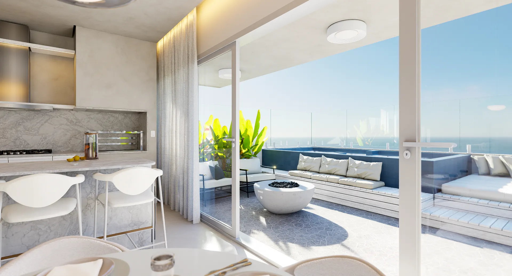
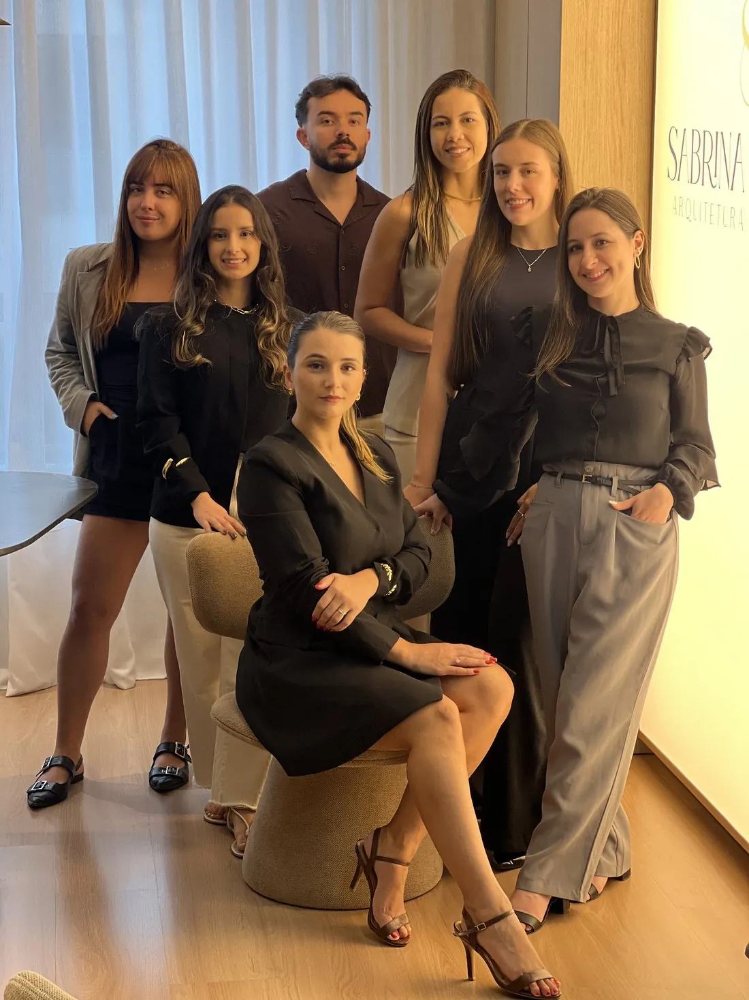

Conceito
- Conversa inicial e briefing
- Levantamento do imóvel
- Estudo preliminar e layout
- Definição do conceito e da paleta

Criamos projetos sofisticados, pensados a partir da rotina, dos desejos e da personalidade de cada cliente, traduzindo sua essência em espaços com identidade e significado.
Nosso escritório
Somos um escritório de arquitetura e design de interiores criado para transformar o sonho de viver em um espaço verdadeiramente seu em um caminho mais simples, seguro e prazeroso, cuidando das escolhas e dos detalhes para que você possa aproveitar a realização, e não carregar a complexidade do processo.
Acompanhamos cada etapa com atenção aos detalhes, para que a experiência seja tão cuidada quanto o resultado.
Nada de soluções prontas. Cada projeto nasce da sua rotina, dos seus desejos e da sua forma de viver, pensado exclusivamente para você.
Do estudo preliminar à execução, você conta com uma rede de profissionais e fornecedores validados pelo nosso escritório, trazendo mais segurança, confiança e tranquilidade para transformar o projeto em realidade.
Iluminação, marcenaria, revestimentos, acabamentos e decoração são pensados em conjunto para que cada escolha contribua para o resultado final.
Sofisticação sem excessos, funcionalidade em cada escolha e uma experiência cuidadosamente conduzida do primeiro encontro à realização do projeto. É o que buscamos em cada trabalho que leva a nossa assinatura.
Projetos selecionados
A designer
Designer de Interiores, Empresária e Diretora Criativa do Escritório Sabrina Ferreira.
Há mais de 10 anos, Sabrina Ferreira constrói uma trajetória guiada pela sensibilidade de ouvir, pela coragem de fazer diferente e por uma busca constante por evolução.
Como diretora criativa do escritório, acredita que um bom projeto nasce de uma relação próxima, transparente e verdadeira. Sua forma de conduzir cada cliente une sensibilidade, firmeza e estratégia, criando soluções que respeitam os desejos, o estilo de vida e a realidade de cada investimento.
Curiosa por natureza e comprometida com a excelência, investe continuamente em conhecimento, liderança, negócios e desenvolvimento pessoal — repertório que hoje se reflete na cultura do escritório e na experiência entregue a cada cliente.
Em 2025, levou essa visão à CASACOR Santa Catarina com o ambiente Janelas para o Mundo, desenvolvido em parceria com a Dimas Construções.
Time
Por trás de cada projeto existe um time.
Arquitetos, designers de interiores e profissionais trabalham de forma integrada, compartilhando o mesmo olhar, o mesmo cuidado e o compromisso de transformar cada ideia em uma solução bem pensada, possível e executável.
Nossa estrutura permite olhar para o projeto por inteiro: da criação aos detalhes técnicos, da escolha dos materiais à marcenaria, da ergonomia às decisões que impactam a execução. Tudo é pensado considerando não apenas como o ambiente será visto, mas como será vivido, utilizado e mantido ao longo do tempo.
Mais do que dividir tarefas, trabalhamos com uma cultura de colaboração, responsabilidade e cuidado. Cada etapa tem profissionais preparados para conduzi-la, enquanto a visão do projeto permanece alinhada do início ao fim.
Ao contratar o escritório Sabrina Ferreira, você não contrata apenas um profissional. Você conta com um time preparado para conduzir seu projeto com mais segurança, organização, cuidado e tranquilidade até a sua realização.

Reconhecimento
Em 2025, Sabrina Ferreira participou da CASACOR Santa Catarina em parceria com a Dimas Construções, apresentando o ambiente Janelas para o Mundo. Uma conquista que reforça o compromisso do escritório com projetos autorais, sofisticados e executados com excelência.
Como trabalhamos
Um caminho definido, com etapas claras e prazos combinados, para você saber sempre em que ponto o seu projeto está.
Serviços
Projeto de design de interiores para casas, apartamentos e coberturas. Layout, marcenaria, iluminação e acabamentos pensados juntos, para transformar o imóvel no lugar onde você quer estar todos os dias.
Falar sobre minha casaLojas, showrooms, escritórios e clínicas. Ambientes que traduzem a marca, organizam o fluxo de quem trabalha e criam uma boa experiência para quem chega.
Falar sobre meu negócioPousadas, apart-hotéis e áreas comuns. Projetos que equilibram conforto, identidade e durabilidade, com soluções pensadas para alta rotatividade.
Falar sobre hospedagemPara quem já tem o projeto e quer garantir que ele saia do papel exatamente como foi desenhado. Visitas à obra, reuniões com fornecedores e curadoria até a montagem final.
Falar sobre a execuçãoPerguntas frequentes
O investimento varia conforme o tipo de projeto (residencial, comercial ou hotelaria), tamanho do imóvel e escopo desejado. Oferecemos desde projeto completo até acompanhamento de execução. Entre em contato para receber um orçamento personalizado baseado nas suas necessidades.
O processo completo é dividido em 3 fases: Conceito (briefing, levantamento e estudo preliminar), Detalhamento (anteprojeto 3D, marcenaria, iluminação e especificações) e Execução (acompanhamento de obra e montagem). O prazo total varia conforme a complexidade, mas em média leva de 3 a 6 meses da concepção à entrega.
Sim. Atendemos presencialmente em Florianópolis, São José e Grande Florianópolis. Para outras regiões, oferecemos projetos à distância com reuniões online e envio de especificações técnicas completas.
Sim. Você pode contratar apenas a parte de projeto (conceito e detalhamento) e executar por conta própria. Também oferecemos a opção de acompanhamento de execução separadamente, caso queira garantir que o projeto saia do papel exatamente como foi desenhado.
Realizamos projetos residenciais (casas, apartamentos e coberturas), comerciais (lojas, showrooms, escritórios e clínicas) e de hotelaria (pousadas, apart-hotéis e áreas comuns). Cada projeto é desenvolvido de forma autoral e personalizada.
A primeira conversa é gratuita e serve para entender seu projeto, suas necessidades e expectativas. Nela, você conta como quer viver no espaço, mostra o imóvel (presencialmente ou por fotos/vídeos) e nós apresentamos nossa forma de trabalho. A partir daí, elaboramos uma proposta personalizada.
Contato
Responder leva pouco. Descreva o imóvel, o que você imagina para ele e o prazo que tem em mente. A partir daí marcamos uma conversa.